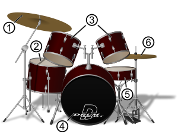

La batería es un conjunto de instrumentos musicales de percusión usado para muchas agrupaciones musicales. También se refiere al músico que toca estos instrumentos, término recomendado por el Diccionario de la lengua española de la RAE,1 aunque también es frecuente el uso del término «baterista» para referirse a este músico.
La batería está compuesta por un conjunto de tambores, comúnmente de madera, cubiertos por dos parches que están hechos comúnmente de un material derivado del plástico y dependiendo del tambor es el tipo de parche hay desde parches muy básicos hasta los parches más complejos compuestos, por una capa de un plástico base, otra con aceite que guarda el sonido y crea un "reverb" y otra que es la sección de golpeo hecha de un material derivado de el látex para la mayor duración del mismo. Un tambor esta compuesto por dos parches, uno de golpeo (en la parte superior) y otro resonante (en la parte inferior). Estos tambores pueden variar su diámetro, afectando altono, y la profundidad, variando la sensibilidad sobre el parche de resonancia.
Además la batería también es acompañada por los imprescindibles platillos, otros accesorios relativamente comunes (tales como elcencerro, panderetas, bloques de madera, entre otros) y ocasionalmente cualquier objeto que produzca un sonido con cierta músicalidad y del gusto del baterista. La batería se puede afinar con una llave de afinación y un sistema de capachos o lugs y pernos de afinación que tensan el parche. Mientras más tenso el parche, más agudo el sonido, y viceversa.
En el dibujo: